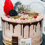
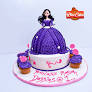

Frieren: Beyond Journey’s EndShinozaki-kun no Mente JijouBibliomania

DandadanThe Summer Hikaru DiedThe Color of the End: Mission in the ApocalypseSmoking Behind the Supermarket with YouAnother
Completed
My Broken MarikoAdabanaYiska
Planning
BLAME!I Have a Crush at WorkCarnelian: the Sille Dragon OdysseyOugon no KeikenchiCigarette & Cherry